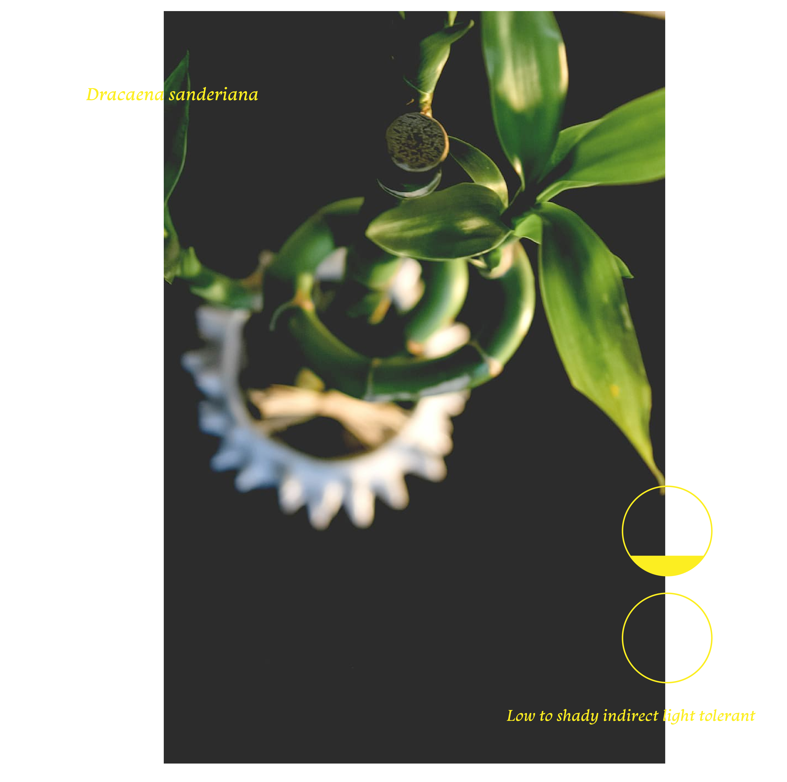

<!DOCTYPE html>
<html lang="en"></html>
<head>
    <meta charset+"UTF-8"
    <meta name+"viewport
    content=width=device-width, initial-scale=1.0" />
    <link rel="stylesheet" href="style.css"/>
    <title>Low Light Houseplants-Lucky Bamboo</title>
    <style>
        body {
          background-image: url('luckybamboo-background.jpg');
          background-attachment: fixed;
          background-repeat: no-repeat;
          background-size: cover;
        }
    </style>
</head>
<body>
    <main class="grid-2">
        <section>
          <div class="grid-2 inner-grid">
            <div style="float: right;">
                
            </div>
            <div style="align: left;">
                
              </div>
            <p style='color: rgb(93, 122, 113); font-size: 14px; font-family: 'Courier New', Courier, monospace;>The Lucky Bamboo plant is a household plant which is easy to care for and grows well in indirect sunlight. Many people think that it’s a real bamboo plant. But it is a type of tropical water lily called Dracaena Sanderiana. The lucky bamboo plant is one of the most popular Feng Shui cures said to bring good luck and prosperity to the place where it is grown. It is also known to enhance the flow of positive energy in the home and office when placed in the right direction. The lucky bamboo plant represents the element wood and the red ribbon tied around it represents the element fire. It is known to create the sense of balance and safety in life. When provided with direct sunlight and pure water, the lucky bamboo plants can survive for nearly a decade.

            </p>
            
          </div>
        </section>
    </main>
    </div>
    <nav><a href="Low-Light-Houseplants_Snake-Plant.html">Snake Plant</a></nav>
    <nav><a href="Low-Light-Houseplants_Pothos.html">Pothos </a></nav>
    <nav><a href="Low-Light-Houseplants_Prayer-Plant.html">Prayer Plant</a></nav>
    <nav style='color:rgb(88, 128, 129)'> Lucky Bamboo</nav>
    <nav><a href="index.html">Home</nav></nav>
</body>
</html>